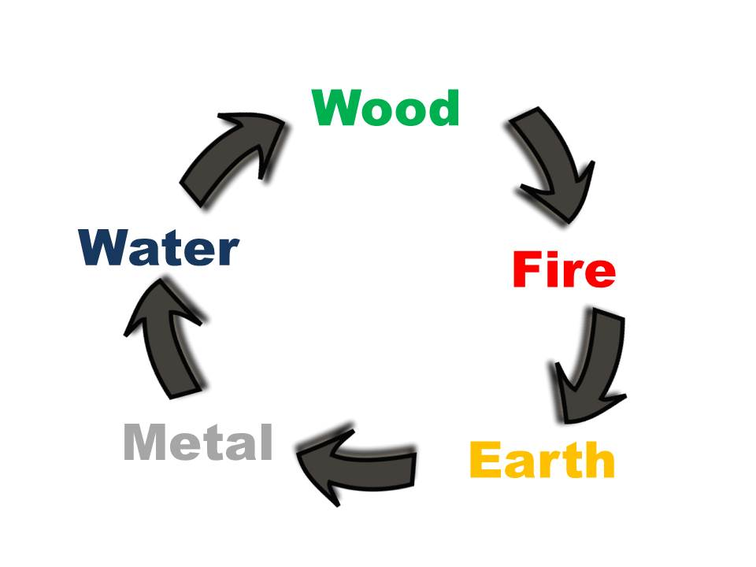

How to Analyse a Four Pillars Chart
You can use the Four Pillars Calculator within this app to obtain a birth chart quickly and accurately. Interpreting the chart and giving a life reading is an art that takes time and dedication to master. The 'Done for You' life readings by Master Ghost Valley, which are in this app, were not obtained by analysing a birth chart in detail. Nobody really knows how Master Ghost Valley wrote the cryptic luck verses. However, over the centuries, people have found the Ghost Valley Art of Life Reading to be uncannily accurate.
If you want to learn the art of interpreting Four Pillars charts you can start here with some basics. To fully develop your skills in Four Pillars of Destiny method of Chinese Astrology you can study with the Feng Shui Research Center. A range of courses and classes are available with support from a global online discussion forum.
Let's start with the beginning of a new life. When a baby is born the moment of the first breath is what determines the Four Pillars chart. At the year, month, day and hour of that first breath, the qi (氣) of that moment sets up a pattern for the spirit and luck of the person.
You see the pattern of the spirit of the person in the natal Four Pillars and you see the pattern for luck in the ten year luck pillars. These patterns are described by the five elements, yin and yang, and the heavenly stems and earthly branches.
Five Elements
The five elements are: wood, fire, earth, metal and water. They are used as a way of describing different types of qi or different types of energies. There is wood qi, fire qi, earth qi, metal qi and water qi. The five elements flow in a cycle

In the app, the natal Four Pillars and the luck and annual pillars are shaded according to the color of the elements.
Wood = Green
Fire = Red
Earth= Yellow
Metal = Grey
Water= Blue
At a glance you can see which element is where in the chart.
Yin and Yang
Each of the five elements can take on the quality of yin and yang. There is yang wood and yin wood; yang fire and yin fire; yang earth and yin earth; yang metal and yin metal; yang water and yin water.
Heavenly Stems
The heavenly stems are in the top half of the Four Pillars chart. There are ten heavenly stems:
| Chinese Name | Pinyin | Element |
| 甲 | Jia | Yang Wood |
| 乙 | Yi | Yin Wood |
| 丙 | Bing | Yang Fire |
| 丁 | Ding | Yin Fire |
| 戊 | Wu | Yang Earth |
| 己 | Ji | Yin Earth |
| 庚 | Geng | Yang Metal |
| 辛 | Xin | Yin Metal |
| 壬 | Ren | Yang Water |
| 癸 | Gui | Yin Water |
Earthly Branches
The earthly branches are in the bottom half of the Four Pillars chart. There are twelve earthly branches, and they have animal names as well.
| Chinese Name |
Pinyin |
Associated animal |
Solar Time |
| 子 | Zi | Rat | 11pm - 1am |
| 丑 | Chou | Ox | 1am - 3am |
| 寅 | Yin | Tiger | 3am - 5am |
| 卯 | Mao | Rabbit | 5am -7am |
| 辰 | Chen | Dragon | 7am - 9am |
| 巳 | Si | Snake | 9am - 11am |
| 午 | Wu | Horse | 11am - 1pm |
| 未 | Wei | Goat | 1pm - 3pm |
| 申 | Shen | Monkey | 3pm - 5pm |
| 酉 | You | Rooster | 5pm - 7pm |
| 戌 | Xu | Dog | 7pm - 9pm |
| 亥 | Hai | Pig | 9pm - 11pm |
The earthly branches are units of time: year, month, day or hour. At Chinese New Year, people say it is the year of the Dragon, or the year of the Snake, etc. You can see in the table above that the 24 hours in a day are divided between the twelve branches, with each branch/animal covering a two hour slot.
Elements and Spirits
There are six spirits in a Four Pillars chart:
| Chinese Name |
English Name |
Description |
| 日主 | Day Master | The heavenly stem in the day pillar, the self-element. It represents the person and is the basis for interpreting the chart. |
| 食傷 | Output | The Output spirit is the element which is generated by the self-element. |
| 財 | Wealth | The Wealth spirit is the element which is controlled by the self-element. |
| 官 | Power | The Power spirit is the element which controls the self-element. |
| 印 | Resource | The Resource spirit is the element which generates the self-element. |
| 比劫 | Parallel | The Parallel spirit is the same element as the self-element |
The various spirits in a chart tell you something about a person’s character. When we link yin and yang with each of the spirits (except for the Day Master) we have ten spirits or ‘ten gods’ (god is another term for spirit). You can find out more about each of the spirits in a particular chart on the Elements and Spirits screen. Tap on each of the heavenly stems and earthly branches to see a description of the elements and spirits in each location of the chart.
A Four Pillars chart comprises two major parts, the natal pillars (from the year, month, day and hour of birth) and the luck pillars. When you analyse a Four Pillars chart, you analyse the elements and spirits in relation to the Day Master. The elements and spirits in the natal Four Pillars tell you about character, whereas the elements and spirits in luck pillars tell you what the person is going to encounter at different times in life.
Luck and Annual Pillars
There are two types of luck pillars. Decade luck which lasts ten years, and within each ten-year luck pillar there is the annual luck which lasts one year.
In the Luck and Annual Pillars screen you can swipe to see each of the decade pillars, one at a time and see the annual pillars within each ten year luck pillar.
New and experienced astrologers will find this screen very handy for studying charts and giving readings because you can see the natal chart, the ten year luck and the annual luck. The shading with the elements helps you spot how the balance between the five elements alters over time and how this affects luck.
Finding Balance
Each person has lucky elements. In most cases, the lucky elements are those elements which bring balance to the chart. Some charts are dominated by one or two elements and in those cases the lucky elements are the dominating elements. You can get an idea of the balance between the elements by looking at the different colours in the natal chart and the luck pillars. However, there are other factors to take into consideration. An experienced astrologer will be able to figure out what is most useful within the natal chart and what luck will bring the person during the ten year luck cycles and the yearly luck cycles.
On the Border
When some babies inhale that first breath, it is at a time which is close to the border between two different hour pillars. Under such circumstances it would be a good idea to check the two possible charts. If someone was born within the last fifteen minutes of an hour branch then you also look at the chart for the next hour branch. If someone was born in the first fifteen minutes of an hour branch then it is worthwhile to check if they might have been born in the previous hour branch. On the main Four Pillars Calculator screen you see the solar time beneath the chart. In the table for the earthly branches you can see the solar hours for each branch. If you notice that the solar time is within 15 minutes of the border, then you would check, e.g. if the solar time shown is 11.03am then that is close to the border of 11am. You would need to look at the chart for with the hour branch for solar time 9am-11am, which is Dragon hour, as well as the chart for solar time 11am-1pm, Snake hour. There are various methods for checking the hour pillar. However, you can draw inspiration from Master Ghost Valley by reading the two different life readings for each hour branch. You might find that intuitively, there is a life reading which stands out and you can then pick the relevant hour branch.
To Learn More
To learn more about studying the art of interpreting Four Pillars charts and giving life readings visit:
www.astro-fengshui.com
www.fengshuiapps.com